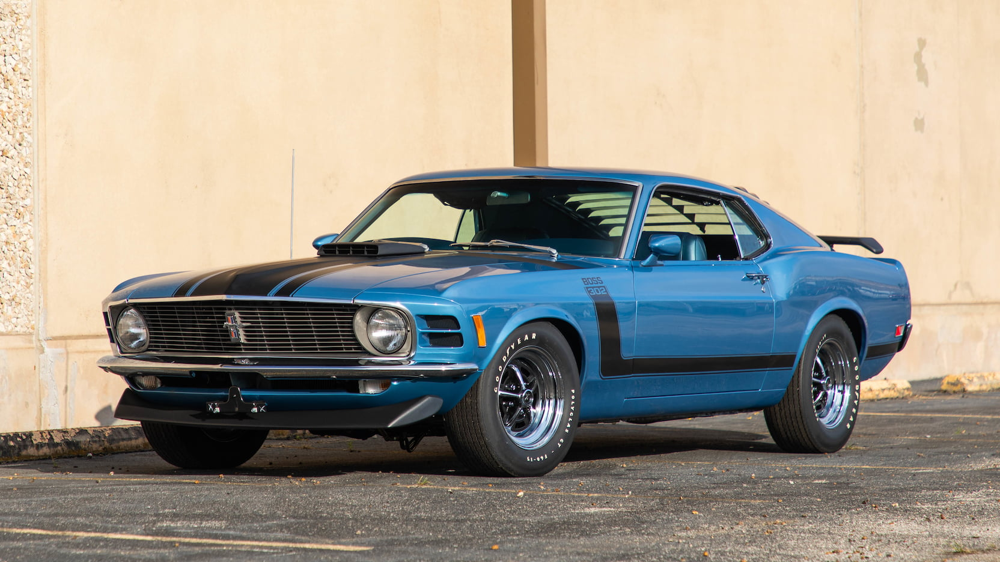

About Musclecars
What is a muscle car? What makes a muscle car, a muscle car? According to experts online, a muscle car is really just a term used to describe any wide varity of powerful, high-performance vehicle.
According to Experts online, a muscle car is any car that has more horsepower. This means, if it has more horsepower than another car, it might be one.
If it has V8 or higher on the engine, it might be a muscle car. There aren't as many around as there used to be-atleast well-known ones.
View_About_the_Introduction.
Mustang_1
The first Mustang to discuss is the 1965 Mustang.
The 1965 Mustang had three models. There was the hardtop, the fastback and the convertible. There was a total of atleast sixteen colors you could get them in.
Furthermore, there was atleast twelve options of colors for the interior trim. I don't know about you, but I like options. I like when I have a lot of good options too.
 View_About_the first_favorite_Mustang.
View_About_the first_favorite_Mustang.
Mustang_2
The first Mustang to discuss is the 1965 Mustang.
The 1965 Mustang had three models. There was the hardtop, the fastback and the convertible. There was a total of atleast sixteen colors you could get them in.
Furthermore, there was atleast twelve options of colors for the interior trim. I don't know about you, but I like options. I like when I have a lot of good options too.

View_About_the_second_favorite_Mustang.